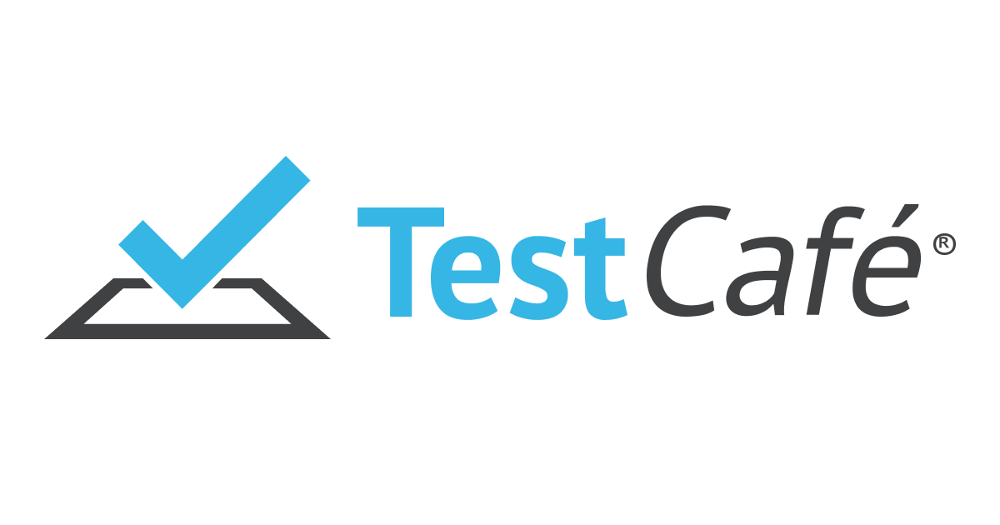
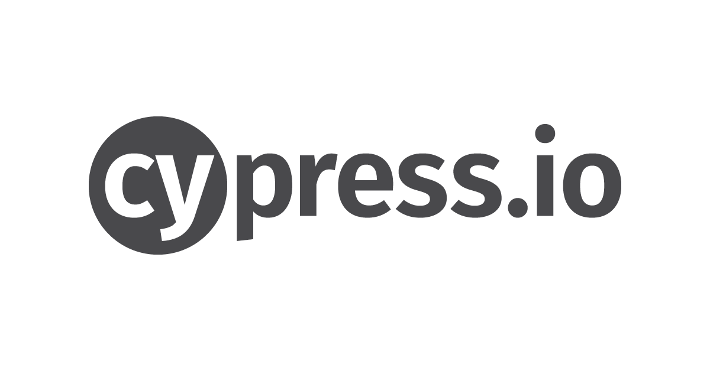
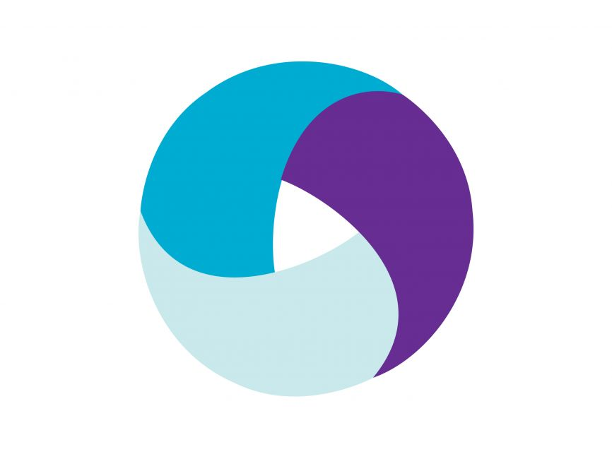
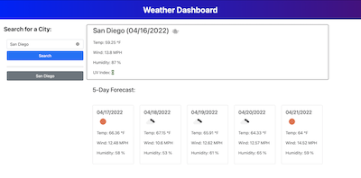
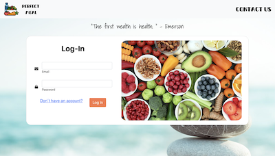
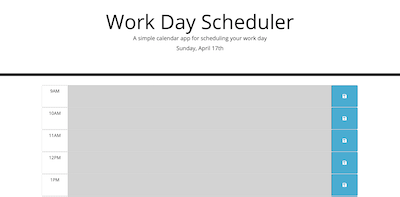

I am a QA Test Engineer located in Mexico City with experince in different testing tools as Selenium IDE, Webdriver, WebdriverIO, TestCafe, Cypress, Mocha, Chai, Postman, Jmeter and Java/Java Script as programing lenguages. Always trying to be up to date with the last testing trendings. Fan of soccer, MMA and Video Games. Interested in increasing my coding skills and decided to take a Fullstack path just as hobby and maybe one day make the transition.
About Me
Skills
-

HTML
-

CSS
-

Javascript
-

JQuery
-

React
-

REST API
-

Git
-

Java
-

TestCafe
-
Selenium Webdriver
-
Webdriverio
-

Cypress
-

Appium
Work

Weather Dashboard
Technologies Used: JS, HTML, CSS
- This application is going to provide weather information to the user depending on their search.
- Searcher is going to give options for autocomplete based only on US cities, but the user is going to be able to search for any city of their preference.
- Every time a search is done, if the city is not in the History section, the city is going to be added to History as a button.

Perfect Meal
Technologies Used: JS, Handlebars, CSS
The App starts with a login form for Nutritionists to access their patients information, this gives them access to antoher page where they can add or delete Patients, having credentials also gives them access to manage other info, like calculating MACROS for each Patient, and generate a calendar for the customer with each meal.
